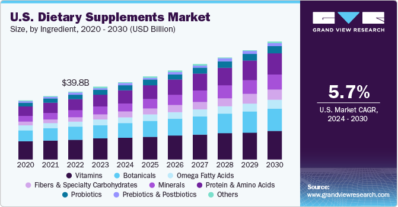
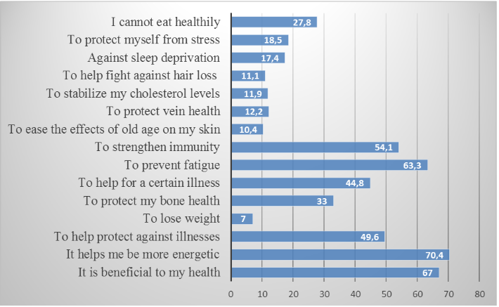

In today’s health-conscious society, the demand for safe, accurately labeled, and high-quality food products/dietary supplements has never been higher. With more and more individuals incorporating dietary supplements into their daily health routines, understanding how this industry works has become more important. The rapid production of dietary supplements highlights the importance of informed consent. The goal of my research is to provide you with relevant facts and data to assist you in navigating this world so that you may make well-informed decisions regarding the products you choose to incorporate into your life.
The dietary supplement world is comprised of many different types of products. These include vitamins, minerals, botanicals, amino acids, and many other substances. The Federal Food, Drug, and Cosmetic Act defines a dietary supplement as “a product, taken orally, containing a dietary ingredient intended to supplement the diet.” In 2023, the dietary supplement market size was estimated at 177.50 billion USD. It is projected to grow at a compound annual growth rate of 9.1% from 2024-2030 (1). It was found that between 1999 to 2012 over half of the adults in the US had used or were actively using a dietary supplement. That trend was found to have remained stable during those years (2). The figure below highlights the past and anticipated future trend of the supplement market value.
One must wonder what is driving this growth. According to a survey conducted in 2015, it was found that upwards of 90% of the primary care doctors who were surveyed were now recommending some supplements (3). It is important that we the public can trust our healthcare professionals to make the correct decisions, or even recommend the right treatments for the ailments we all face. I am sure some of you have seen advertisements on tv about different products, primarily medications, that can help with certain conditions. These sorts of advertising methods are beginning to show up in the supplement world as well. They may not be in the form of television media, but studies are being funded to highlight the necessity of dietary supplements. One of the greatest examples being omega-3 fatty acids. These studies suggest that it might not be fully possible to get adequate amounts necessary through diet alone (4). How many of us take a multivitamin because it seems like the healthy thing to do? A lot of us are led to believe that we cannot adequately provide our bodies with the nutrients that they need from our diet alone.
Seeing an ad is not the only way that these products are making their way around. It was found that only a quarter of individuals who are currently using dietary supplements are doing so from a physician’s recommendation (5). Considering the size of the industry, 75% of those people doing so from word-of-mouth recommendations or other means is a scary concept. We must do better at verifying claims made about the efficacy of the products we consume.
The FDA (Food and Drug Administration) is responsible for the regulation of both finished dietary supplements and their dietary ingredients (6). The FTC (Federal Trade Commission) is responsible primarily for the regulation of advertising and marketing of finished dietary supplements.
The Dietary Supplement Health and Education Act of 1994 (DSHEA) established that dietary supplement ingredients would not be regulated as food additives. Under this legislation, two categories of dietary supplement ingredients were defined: "old" and "new" dietary ingredients. DSHEA grandfathered all supplement ingredients marketed within the US before October 15, 1994, deeming them safe for consumer use. However, for companies intending to introduce a new product containing a "new dietary ingredient" not previously approved by DSHEA, they must submit a new dietary ingredient notification to the FDA, providing evidence that the ingredient is "reasonably expected to be safe. (7)" This means that the company is deciding what is considered to be safe and we need to accept with an understanding that there could be bias or subpar testing involved.
The DSHEA also has established Good Manufacturing Practices and has required all manufacturers and distributors of these dietary supplements to adhere to these standards. Any company that produces a dietary supplement and fails to follow the standards can have their product immediately removed and banned by the FDA. The way that the FDA can “police” this market is far from ideal. The FDA utilizes the internet, inspection results conducted on the manufacturers, any complaints or adverse events submitted about a product, and occasionally laboratory tests (8).
It is not required for a manufacturer to obtain approval from the FDA before producing their product. As such, the FDA does not have a log of all the current products available on the market. If you as a consumer desired more information regarding a specific product, you could not consult the FDA. Rather, you would need to seek the information you desired from the actual manufacturer of the product. It is not acceptable that for the FDA to have a “Sufficient” amount of evidence to ban a product, it must negatively impact someone’s life (9).
The “Good Manufacturing Practices” that were previously mentioned had been put in place to ensure the proper manufacturing, packaging, labeling, testing, quality control, release for distribution, and holding of dietary ingredients and supplements (10). These regulations do not only apply to the actual manufacturer but also to the raw material suppliers, and contract manufacturers.
All manufacturing companies that produce supplements are responsible for their product testing. Unfortunately, the FDA is not the current regulatory body that analyzes these tests to ensure quality. For that to happen, it has become standard that these companies have those tests verified by third-party companies. The FDA hopes that with these manufacturing standards, the industry can ideally regulate itself (11).
It is not reasonable to put faith in the concept of this industry regulating itself. When we consider how much money some companies can make on the distribution of such products, it almost seems inevitable that some would cut corners. In 2010, ConsumerLab.com conducted quality assurance tests on 24 different protein supplements. They found that 31% of those products tested failed to meet their quality standards. Also, one of the protein supplements was found to only contain “a small fraction” of the stated protein content. Their tests also revealed lead contamination in 2 protein supplements. The amount of lead found was 6-18 μg, which would be ingested daily and could pose risks to some consumers (12).
Some of you might be wondering what “adulteration” means. Let’s discuss it. Adulteration, according to Oxford Languages, is the action of making something poorer in quality by the addition of another substance. While the FDA is not tasked with assessing the safety of any dietary supplement before it hits the market, it is tasked with finding and removing adulterated and hazardous supplements from the market.
In a study conducted to evaluate warnings released by the FDA from 2007 through 2016, they found that the administration had issued 776 warnings of unapproved ingredients found in different supplements. These products were commonly marketed for sexual enhancement, weight loss, or muscle building. They also found that with 157 (20.2%) of those products contained more than 1 unapproved ingredient (13).
Dietary supplement adulteration commonly follows one of two patterns: economic adulteration, which is the substitution of a cheaper ingredient for a more expensive one listed on the label. In contrast, pharmaceutical adulteration involves adding an active drug to a supplement that is supposed to be botanical (14).
When the FDA identifies a drug containing an unapproved ingredient, and determines that it poses a reasonable possibility of it causing serious adverse health consequences or death, it will perform a class I drug recall. In a study conducted on 274 recalled dietary supplements between January 1, 2009, and December 31, 2012, it was found that one or more pharmaceutical adulterants were identified in 66.7% of the recalled supplements that were still available for purchase. This same study found that 63% of the analyzed supplements contained the same adulterant that was identified by the FDA, and 22.2% of them contained 1 or more additional banned ingredients not identified by the FDA (15).
As you can see, the actions by the FDA could not be considered efficient. There needs to be more aggressive enforcement of the law or even changes to the law to ensure that these products are not available for purchase.
The FDA provides definitions for two types of adverse events. 1. “An adverse event is any health-related event associated with the use of a dietary supplement that is adverse.” Which could be a headache, abdominal pain, allergic reaction, rash, dizziness, or lightheadedness. 2. A serious adverse event “is an adverse event that results in death, a life-threatening experience, inpatient hospitalization, a persistent or significant disability or incapacity, or a congenital anomaly or birth defect; or requires, based on a reasonable medical judgment, a medical or surgical intervention to prevent an outcome described previously (16).”
One can report “product safety issues” to the FDA via the safety reporting portal (17). The FDA further provides context on who is required to report adverse events. The Manufacturer, packer, or distributor whose name appears on the label of a dietary supplement marketed is required to submit all serious adverse events to the FDA (18).
During my reading on who is required to report, I did think a bit about medical professionals and if they were or were not required to report adverse events that they could identify as being directly attributed to a dietary supplement and sadly they are not. It is highly encouraged as you would suspect and the FDA gives extra credence to physician reports (19).
I would assume that many of us are aware of our family’s health history and what issues might “run in the family.” We must be aware of these issues and do our due diligence in researching dietary products before we begin consumption. We all want to trust that everything available to use is safe for use. We may not think to consult a healthcare professional before we decide to start using a new multivitamin, or herbal supplement. In an FDA-commissioned study, it was estimated that the FDA is notified of less than 1% of all adverse events associated with dietary supplements (20). I hope that this can shed some light on the danger we face with these products and inspire you to do more research before we buy.
The COVID-19 pandemic had a deep impact on all of us. To some, it was a wake-up call as to how ill-prepared we are to handle what nature can throw at us. But when experiencing extreme hardships, there is a lot to learn. During the pandemic, many people became aware of problems relating to mental health, fitness, and sleep.
In reports released by ADM (Chicago) and FrieslandCampina Ingredients, they highlight some trends in the population that include 60% of those polled report exercising at least three times per week. It also notes that 46% of those polled between the ages of 26-35 and 42% between the ages of 36-45 are actively looking to improve their mental health (21).
From the same referenced article above about the findings of those two reports, it further states that 79% of the US consumers polled said that taking dietary supplements is important to their overall health.
The COVID-19 pandemic is an example of one event inspiring many to act on areas of their health they felt were lacking. As we progress through life, we all will experience different things that will impact our health in different ways. In a study titled “Consumers’ Attitudes and Behaviors Regarding Dietary Supplements,” they studied 270 randomly selected individuals who live in Tekirdağ, Turkey. In the figure I included below, it highlights some of the reasons why the respondents choose to take dietary supplements (22).
“The aim of marketing is to know and understand the customer so well the product or service fits him and sells itself… The aim of marketing is to make selling superfluous.” – Peter Drucker
As we covered in a previous section, we learned a bit about how the FDA goes about regulating the market. If you recall, the FTC operates primarily in the advertising world. For a new product to hit the market, advertising for that product must be truthful and substantiated. For a new company to begin advertising their product as “Supporting wellness,” the company must notify the regulatory bodies within 30 days of marketing that product. In some instances, the supplement will be required to provide a disclaimer that reads “This statement has not been evaluated by the U.S. Food and Drug Administration. This product is not intended to diagnose, treat, cure, or prevent any disease.” (23)
There are three permissible claims for these supplements.
Sheila F. Anthony, former Commissioner of the FTC (Federal Trade Commission) stated in an article titled “Combating Deception in Dietary Supplement Advertising,” “Following the dramatic regulatory changes of the Dietary Supplement Health and Education Act, we saw an equally dramatic increase in the marketing of supplements and, with that increase, we have seen more examples of questionable claims (24).”
We live in the information age. As much of a blessing as the internet is, that is also one of the primary places in which these predatory salesmen intend to mislead us. But you can also find many examples of misleading advertising in mainstream media. I plead that each of us will take extreme caution when considering products that we find via these mainstream channels. No matter how much you trust what the advertiser is saying, always remember that there is money involved. Far too many of these mainstream sources will take large sums of money without considering the negatives of what they show.
If you have made it this far, I thank you. With all that being said, what can/should one do to protect themselves in this market? There are several things we all can do to analyze any supplement to determine if it is safe and necessary for us (25).
I cannot express enough how important it is that everyone due their due diligence before consuming any supplement. Do your research, and then consult a medical professional if what it is you are considering is truly right for you.